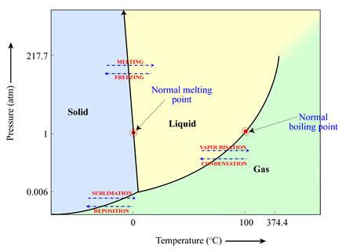
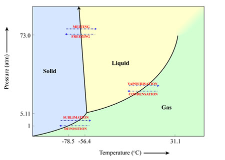

Sublimation is the process in which a material changes from a frozen solid to a gas without passing through the intermediate liquid state.
Whether a material will sublimate (solid to gas), melt (solid to liquid) or vapourise (liquid to gas) depends on the temperature and pressure of the environment in which it is located. This can be illustrated in a ‘phase diagram’ such as the one below for water. In this case, and with the pressures (1 atmosphere) and temperatures (25 degrees Celsius) we are accustomed to on Earth, water ice will melt to form liquid water, which will then vapourise to form water vapour. However, if the pressures are low enough (for example, the pressures we find elsewhere in the Solar System), water ice will turn directly into water vapour as the temperature increases, bypassing the liquid water stage.
Sublimation occurs in many places in the Solar System. Two examples are:
- The sublimation of water from cometary nuclei as the comet approaches the Sun’
- The sublimation of the polar ice caps on Mars during the Martian summer.

An example of a material that sublimates here on Earth is frozen carbon dioxide (CO2) – more commonly known as ‘dry ice’. When exposed to room temperature air at pressures of 1 atmosphere, the frozen CO2 turns directly into gaseous CO2.
